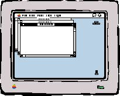
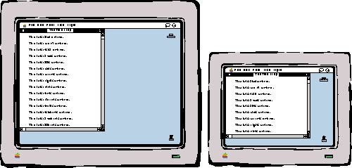
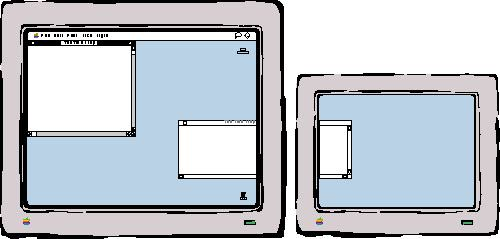
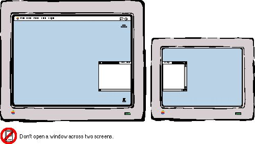
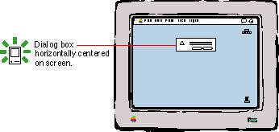
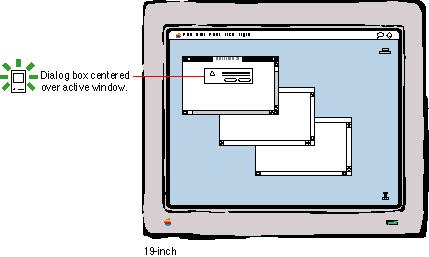
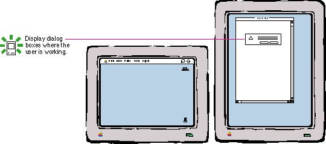

|
|
Window PositionsWhenever your application displays a window on the screen, you must decide where to put it and how big it should be. To determine where to place a window, consider what kind of window your application is opening, what other windows are open and where, and the relationship between the content of the window and other windows or dialog boxes. Whenever a change has been made to the initial size or location of a window, maintain the user's preferred size and position for the window.The sections that follow present examples for the most common situations. You should consider how your application compares to these common situations to determine the best ways to position your application's windows, including dialog boxes and alert boxes. The Default Position on a Single ScreenWhen your application opens a new document window, position it in the upper-left corner of the screen. Open each additional new document window below and to the right of its predecessor. Figure 5-15 shows windows positioned on a single screen.Figure 5-15 Window positions on a single screen  Before closing a window, check to see whether the user has changed its size or position. Save window positions, and reopen windows in the size and position in which the user left them. If a user opens, moves, and closes a document window without making any other changes, save the new window position but don't modify the date stamp of the document. If the user does not change the size or position of the window, don't save the position when the user closes the window. Before reopening a window, check to make sure that the size and state are reasonable for the user's current monitor or monitors, which may not be the same as the monitor on which the document was last open. For example, a user might start working on a word-processing document on a full-page display at work and then take the document home and work on it on a computer with a 13-inch monitor. In a situation like this, your application should open the document in a window sized appropriately for the smaller monitor and not necessarily in the saved size. See the section "The Zoom Box and Window Behavior," beginning on page 156, for more information on appropriate window size. Figure 5-16 shows the standard position of a window on a 19-inch screen and a 13-inch screen. Figure 5-16 The standard window position on two sizes of screens  The Default Position on Multiple ScreensOn computer systems with more than one monitor attached, display the first new window in the upper-left corner of the screen that contains the menu bar. If the user doesn't move that first window, display each additional window below and to the right of its predecessor. If the user moves the window, display each additional window on the screen that contains the largest portion of the frontmost window. If there is sufficient room on the screen, display the subsequent windows to the lower right of the frontmost window. If there isn't enough room on the screen, display subsequent windows starting in the upper-left corner on the screen (and then continue to display additional windows in relationship to this new position). For example, if the user creates a new window, drags it to a second screen, and then creates a second window, display this window and any subsequent windows on the second screen.Figure 5-17 shows the position in which to open a new window when the user has dragged its predecessor from the screen with the menu bar to a second screen. Figure 5-17 The standard window position on multiple screens  When you open several windows on multiple screens, continue to place the windows on the screen where the user is working, each new one below and to the right of its predecessor. The initial position of a window, however, must always be contained on a single screen. It would be awkward to have a window appear initially on screens of different display depths and resolutions. Of course, the user can choose to place a window in such a position. Figure 5-18 shows a window incorrectly displayed across two screens. Figure 5-18 A window displayed across two screens  Dialog Box and Alert Box PositionsOpen dialog boxes and alert boxes on the screen where the user is working. On a computer system with one monitor, display the dialog box or alert box horizontally centered on the screen. The dialog or alert window should appear with one-fifth of the vertical desktop area (not including the menu bar) above it and the rest below the window. Figure 5-19 shows where to place an alert or dialog box on a single screen if no windows that the alert or dialog box is related to are open.Figure 5-19 Standard position of an alert box  If you are displaying a dialog box or alert box that relates to a specific document, position it relative to the document window. This position reinforces the relationship of the two windows and also puts the box near the user's focus. Leave one-fifth of the document visible above the dialog box or alert box. Figure 5-20 shows where to position an alert or dialog box in relation to the active document window. Figure 5-20 Alert box position in relation to the active document window  When the user has more than one monitor connected to the computer, display the dialog box or alert box on the screen where the user's attention is. For example, if a text document is active, open a find-and-replace dialog box on the screen where the text document appears, not necessarily on the screen where the menu bar is. Leave one-fifth of the document visible above the dialog box or alert box. Figure 5-21 shows where to place an alert or dialog box when the user has more than one monitor connected to the computer. Figure 5-21 Standard alert box position with more than one screen  |